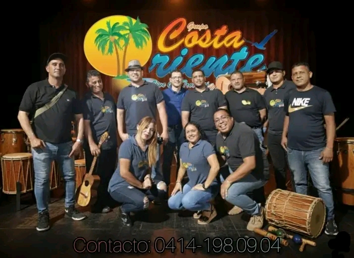

Nuestra misión es conectar a los visitantes con la riqueza natural y folclórica de Cumaná a través del ecoturismo activo. Guiados por los propios músicos e integrantes de la Agrupación Costa Oriente, ofrecemos experiencias memorables de navegación por el mítico Río Manzanares, fusionando la aventura del rafting con la calidez y las tradiciones del oriente venezolano.